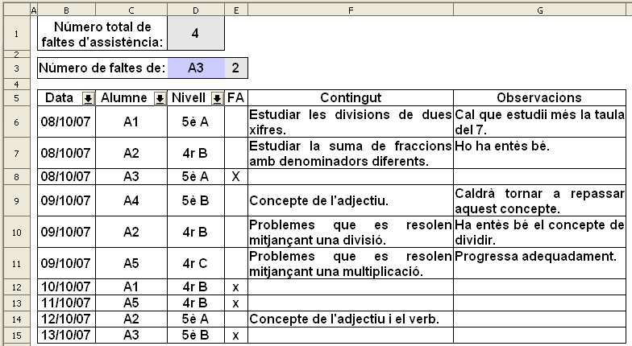
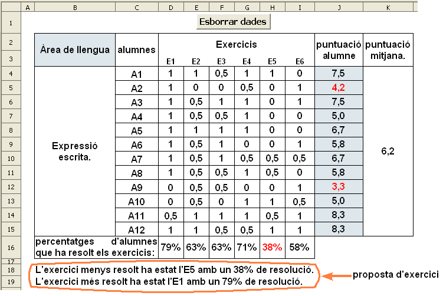

Presentació gràfica de l'activitat.

Funcions que es fan servir en aquesta activitat
Objectiu de l'activitat
Fer un diari on escriure les activitats treballades en uns determinats alumnes de reforç i on escriure allò que es cregui convenient per fer un seguiment dels objectius didàctics que s'estan treballan en l'alumne.
Desenvolupament de l'activitat
1. Obrir el fitxer M6 i afegir un nou full anomenat M6P3 diari escolar.
2. Escriure a les cel·les corresponents les dades que hi ha escrites al gràfic de l'activitat de presentació.
dades diari escolar
3. Seleccionar les cel·les del rang B5:G15 i anar a Dades | Filtre| i clic en Filtre automàtic.
4. Comprovar que funcionin bé els filtres fent un filtre de A1 de la columna que té per capçalera la paraula Alumne. Havent-ho fet, només s'haurien de veure quatre files amb informació de l'alumne A1.
La cel·la D1 mostra el número total de faltes d'assistència (FA) i la cel·la E3 mostra el número de faltes d'assistència d'un determinat alumne.
5. Escriure a la cel·la
D1:
=COMPTASI(E6:E15;"X")
Amb aquesta fórmula se sap el número de cel·les del rang E6:E15 en que hi ha escrit la lletra x, sabent així el número total de faltes.
6. Escriure a la cel·la
H6:
=SI($D$3=C6;E6;"")
Per saber el número de faltes d'un determinat alumne, primer caldrà fer una selecció d'aquelles cel·les del rang C6:C15 que continguin el valor de la cel·la D3 i que a la vegada la cel·la E6 tingui la lletra x. És per això, que a la cel·la H6 s'escriu =SI($D$3=C6;E6;""). És a dir, si el valor la cel·la D3 és igual al valor de la cel·la C6, llavors apareix el valor de la cel·la E6; si no, la cel·la H6 no mostra res.
A la cel·la D3 s'escriu el nom de l'alumne.
7. Fer una copia de la cel·la
H6 i enganxar-ho a les cel·les del rang
H7:H15
8. Escriure a la cel·la
E3:
=COMPTASI(H6:H15;"X")
Amb aquesta fórmula se sap el número de cel·les del rang H6:H15 en que hi ha escrit la lletra x,
sabent així el número total de faltes d'un determinat alumne de la cel·la D3.
10. Protegir les cel·les que convingui.
11. Ocultar les cel·les que convingui.
12. Comprovar que l'activitat funcioni correctament.
13. Desar el fitxer
M6
Presentació gràfica de l'activitat.

Funcions que es fan servir en aquesta activitat
Objectiu de l'activitat
Fer un registre de notes.
Desenvolupament de l'activitat
1. Obrir el fitxer M6 i afegir un nou full amb el nom M6P3 notes.
2. Fer una taula com la que es veu en l'activitat de presentació i escriure les dades que es veuen a les cel·les del rang B2:I15 i de les cel·les K2 i B16. El contingut de la resta de les cel·les s'explica a continuació.
notes.csv
3. Escriure a la cel·la J4:
=SI(I(D4="";E4="";F4="";G4="";H4="";I4="");"";SUMA(D4:I4)*10/6)
Amb la funció =I(), la cel·la J4 no mostrarà cap valor (“”) si cada una de les cel·les del rang D4:I4 no conté cap valor numèric.
Amb la última part d'aquest fórmula, SUMA(D4:I4)*10/6, s'obté un valor sobre una puntuació de 10. Aquesta última part també es pot substituir per MITJANA(D4:I4)*10 donant el mateix resultat
4. Crear un estil de cel·la on la lletra sigui vermella i anomenar-lo
vermell.
Per crear un estil de cel·la, fer el següent:
Fer clic a la cel·la B1 i fer que el color de la lletra d'aquesta cel·la sigui vermell
Havent-ho fet, de la barra de menú anar a Format | Estils i formatació i es mostrarà una finestra anomenada Estil i Formatació (prement la tecla F11 es mostra la mateixa finestra)
Fer clic en la icona "Nou estil a partir de la selecció" i es mostra una altra finestra anomenada Crea un estil
Escriure el nom de l'estil, vermell per exemple, a la casella corresponent del bloc Nom de l'estil i clic en D'acord
Tancar la finestra Estil i Formatació
5. Seleccionar la cel·la J4 i assignar-li un format condicional amb les següents condicions:
Si el valor mostrat per aquesta cel·la és inferior a 5, llavors es mostrarà en color vermell.
6. Copiar la cel·la
J4 i enganxar-la a les cel·les del rang
J5:J15 per copiar les fórmules i l'estil de cel·la
7. Escriure a la cel·la
K4:
=SUMA(J4:J15)/12. També es pot substituir per la funció
=MITJANA(J4:J15)
8. Escriure a la cel·la
D16:
=SI(SUMA(D4:D15)=0;"";SUMA(D4:D15)*100/12)
Amb aquesta fórmula s'obté el tant per cent d'alumnes que ha resolt bé l'exercici E1.
Observar que la funció =SUMA() ha substiut a la funció =I() de la fórmula explicada en el pas 3 sent una altra manera de fer el mateix.
9. Seleccionar la cel·la
D16 i assignar-li un format condicional amb les següents condicions:
10. Copiar la cel·la D16 i enganxar-la a les cel·les del rang E16:I16
D'aquesta manera es copia la fórmula de la cel·la D16 a les cel·les del rang E16:I16 amb les modificacions convenients de manera automàtica i, a més, també es copia de manera automàica l'estil de cel·la.
11. Fer una macro amb les següents funcions:
12. Protegir les cel·les que convingui.
13. Ocultar les cel·les que convingui.
14. Comprovar que l'activitat funcioni correctament.
15. Desar el fitxer M6.